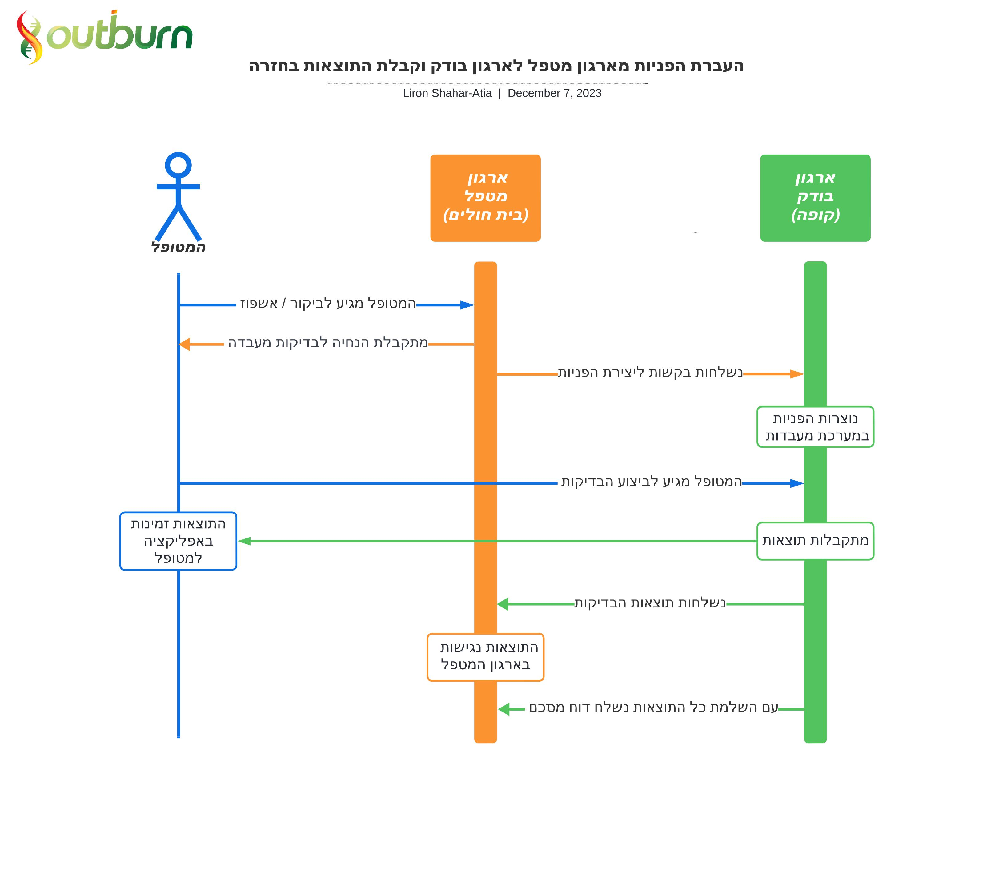
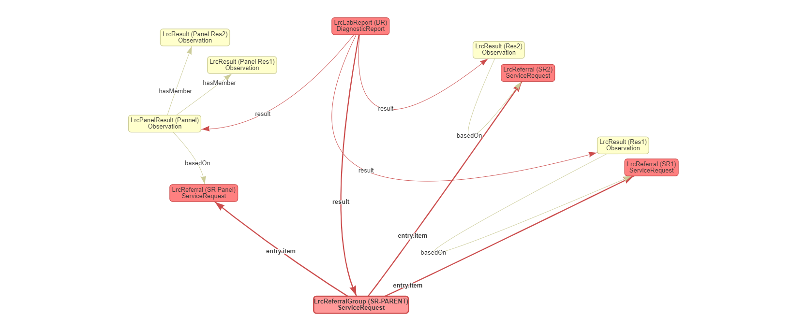

Hospital-Community Lab Referral Cycle
0.1.0 - ci-build
Hospital-Community Lab Referral Cycle - Local Development build (v0.1.0) built by the FHIR (HL7® FHIR® Standard) Build Tools. See the Directory of published versions
| Official URL: http://oncology.fhir.outburn.co.il/ImplementationGuide/lab-referral-cycle | Version: 0.1.0 | |||
| Active as of 2024-02-22 | Computable Name: LabReferralCycle | |||
מטופלים רבים מקבלים טיפול רפואי במסגרת ארגון רפואי אחד, ומבצעים את הבדיקות הנדרשות במסגרת ארגון רפואי אחר, למשל קבלת טיפול בביה”ח ובדיקות מקדימות לטיפול בקופת החולים. במקרים רבים על המטופל מוטלת האחריות לתווך בין שני הארגונים השונים, כלומר להיות “שליח” ולהעביר ביניהם את המידע רלוונטי בכדי שהטיפול יתאפשר. מטרת התהליך עבורו הוגדר ה- IG (ImplementationGuide) של “Hospital-Community Lab Referral Cycle” הינה ליצור תהליך שרובו אוטומטי ללא תלות במטופל, בהתאם לתקן FHIR, ובכך מתבסס על סטנדרטיזציה וטרמינולוגיה בינלאומית. יתרונות נוספים: צמצום בירוקרטיה מצד המטופל, צמצום משאבי כח אדם מצד שני הארגונים, צמצום טעויות אנוש (המידע עובר ישירות בין המערכות של שני הצדדים), אפשרות לצפייה בתוצאות ע”י הארגון המטפל ברגע קבלתן, ואפשרות להיערך מראש לטיפול מותאם על פי התוצאות שנצפו מראש.
להלן תרשים המתאר את התהליך העסקי, בהתייחס לשלושת הגורמים המעורבים: המטופל, הארגון המטפל והארגון הבודק בו מתבצעות הבדיקות.
ניתן לראות את השלבים, מי אחראי על אילו שלבים ואיזה מידע מועבר בין הגורמים.
נקודה חשובה בתהליך- המטופל יוזם שתי פעולות בלבד: הגעה לביקור במסגרתו הוא מקבל את ההפניה וביצוע הבדיקות. יתר השלבים בהם עובר מידע מבוצעים אוטומטית ע”י ארגוני הבריאות.

התרשים מציג את הפעולות באופן כרונולוגי, עם פערי זמן קבועים. בפועל, בכל תהליך יוגדרו טווחי הזמן הרלוונטיים עבורו. בנוסף, יתכן שחלק מהפעולות יבוצעו סינכרונית, למשל שליחת התוצאות לארגון המטפל בו בזמן שהן מתקבלות במעבדה של הארגון הבודק.
ImplementationGuide זה מתייחס לתהליך העברת הפניות לבדיקות מעבדה מארגון אחד (ארגון יוזם) לארגון אחר (ארגון מבצע), וקבלת התוצאות עבור ההפניות הללו בחזרה, באופן אוטומטי. התהליך נקרא: Lab-Referral-Cycle ובקצרה: LRC. הארגון היוזם שולח הפניות עבור הבדיקות הנדרשות (ServiceRequest). שליחת הפנייה עבור כל בדיקה בודדת עם קוד הבדיקה שלה, או במקרה של סוללה (פאנל בדיקות), שליחת הפניה עבור הסוללה עם קוד בדיקה אחד שמייצג את כל הבדיקות הכלולות בה. שלב זה מיוצג בפרופיל LrcReferral. בסיום שליחת כל ההפניות הרלוונטיות למקבץ שנשלח, נשלחת הפניה מאגדת (ServiceRequest) שהיא הטריגר ליצירת ההפניות בארגון המבצע. ההפניה המאגדת כוללת קישורים (references) לכל ההפניות שנשלחו. שלב זה מיוצג בפרופיל LrcReferralGroup. עם היווצר ההפניה המאגדת, הארגון המבצע שולח לארגון היוזם משאב מסוג דוח מסכם, עם סטאטוס ראשוני של registered. הדוח מקושר רק להפניה המאגדת ובהמשך, לאחר שיגיעו תוצאות הבדיקות, הוא יכלול קישורים (references) גם אליהן. שלב זה מיוצג בפרופיל LrcLabReport. לאחר ביצוע הבדיקות, הארגון המבצע שולח את תוצאות הבדיקות (Observation) חזרה לארגון היוזם. שלב זה מיוצג בפרופיל LrcResult. במידה ובתהליך נכללה גם סוללת בדיקות (פאנל) תישלח מהארגון המבצע גם תוצאה מאגדת (Observation) אשר כוללת קישורים (references) לתוצאות הסוללה שהתקבלו. שלב זה מיוצג בפרופיל LrcPanelResult.
אפשרויות נוספות ליצירה/עדכון משאבים מהקהילה (Client) לביה”ח (Server):
